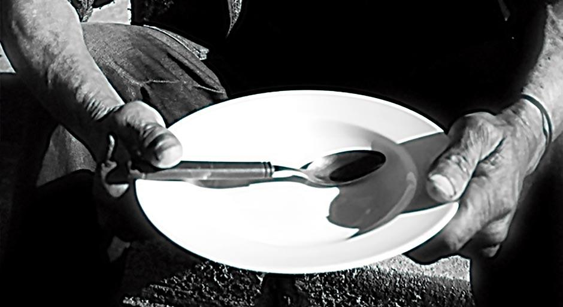

Em meio à pandemia, fome volta para a mesa dos brasileiros
O impacto da pandemia
Com a transferência das aulas para o espaço virtual, muitos estudantes perderam o único local em que podiam realizar refeições mais nutritivas ou a única do dia.
Algumas secretarias estaduais e municipais promoveram entrega de um cartão-alimentação, com um valor equivalente à merenda escolar para as famílias vulneráveis. Mas diversos problemas de acesso mantiveram os alunos longe do benefício.
“A perda dos espaços de alimentação escolar durante a pandemia afeta muitas famílias no país. Apesar dos pagamentos de valores ‘equivalentes’ ao consumo alimentar mensal das crianças, esse tipo de medida não atingiu todos os lares brasileiros e também deixou de garantir que as crianças pudessem ter uma alimentação variada, principalmente porque o valor passou a ser usado para a alimentação de toda a família que muitas vezes não contava com outras formas de renda”, pontua Lis Furlani Blanco, doutoranda na Unicamp e pesquisadora da área de Antropologia das Políticas Públicas e Alimentação, a Pesquisa de Orçamento Familiar no Brasil (POF) de 2017-2018.
Outra questão preocupante é o fim do auxílio emergencial em um momento em que o país registra 13,1 milhões de desempregados e 10,3 milhões de brasileiros em insegurança alimentar grave, de acordo com o IBGE. “Só a diminuição no valor para R$ 300 pode causar uma transformação gravíssima no cenário da fome no país. Se você faz um cálculo básico do valor de uma cesta básica nas grandes cidades, e quanto uma cesta dura em uma família de quatro pessoas, sem nem contar com outros gastos, é possível perceber que os prognósticos são terríveis”, defende a pesquisadora. Blanco reforça que a atuação do governo federal, no que se refere ao combate à fome, vem falhando de forma sistemática.
“É importante lembrar que nem mesmo o auxílio emergencial foi uma iniciativa desse governo que, no entanto, vem tentando tomar os créditos da medida. Além disso, não houve um incentivo para a outra ponta da relação que é central na garantia da segurança alimentar dos brasileiros, os agricultores familiares. Sem mencionar que desde 2017 o Brasil tem diminuído os estoques nacionais de grãos, essenciais no controle dos preços de alimentos básicos da nossa cesta alimentar, a alta no preço do arroz é uma consequência disso”, argumenta.
Em 2019, por exemplo, o presidente Jair Bolsonaro chegou a afirmar que não havia fome no Brasil durante uma entrevista coletiva. Poucas horas depois, amenizou o tom da fala. “Temos problemas alimentares no Brasil? Temos. Não é culpa minha, vem de trás”, disse na época.
Ainda no primeiro ano do mandato, o presidente extinguiu o Conselho de Segurança Alimentar e Nutricional (Consea) e minou os recursos para projetos ligados à temática, como o Programa de Aquisição de Alimentos da Agricultura Familiar (PAA).
“A fome tem sido agravada durante a pandemia por causa de escolhas tomadas pelos governos, mas ela é também estrutural e estruturante no sistema em que vivemos, assim como a desigualdade, o racismo, o machismo, o patriarcado. Se não aproveitarmos esses momentos de crise para questionarmos esses processos de maneira efetiva indo fundo na crítica, sairemos dessa (se sairmos) e continuaremos com os mesmos problemas”, pontua Blanco.
Um país de barriga vazia
No campo e na cidade, insegurança alimentar cresce no Brasil.
Pesquisadores discutem o impacto da pandemia, mas também o cenário que já se desenhava antes da crise sanitária
Existe a fome, a memória da fome e o medo da fome. Primeiro o dinheiro ‘diminui’.
E a percepção de que a pobreza está piorando acende o alerta de que, em breve, pode faltar comida no prato.
Conforme a situação piora, no malabarismo da economia doméstica, as famílias começam a substituir os alimentos
que costumavam consumir por outros mais baratos, ao mesmo tempo em que os adultos passam a se alimentar menos
para garantir a necessidade das crianças. Até que chega o momento em que é preciso cortar mais fortemente na quantidade:
agora, todos, inclusive as crianças da casa, já não conseguem fazer as refeições completas. Do primeiro ao último estágio,
esse é o circuito que descreve os diferentes níveis de insegurança alimentar que atingem quase117 milhões de brasileiros
hoje, segundo o inquérito ‘Insegurança Alimentar e Covid-19 no Brasil’, produzido pela Rede de Pesquisa em Soberania e
Segurança Alimentar e Nutricional (Penssan). “A situação é extremamente grave. E o país vai sofrer muito para se recuperar”, alerta Elisabetta Recine, coordenadora do
Observatório de Políticas de Segurança Alimentar e Nutrição da Universidade de Brasília (UnB). É verdade que nem sempre
se chega ao último nível, mas tampouco é preciso passar pelos outros dois para alcançar o momento da fome.
“Às vezes são processos muito rápidos”, diz o pesquisador Francisco Menezes, ex-presidente do
Conselho Nacional de Segurança Alimentar e Nutricional (Consea), extinto em 2019. Segundo dados da pesquisa da
Rede Penssan, 73,4 milhões de brasileiros estão no primeiro estágio, considerado leve, 24,2 milhões no segundo,
moderado, e nada menos do que 19 milhões encontram-se em insegurança alimentar grave, o nome científico para fome.
Se tomarmos os dados do estudo desenvolvido por um grupo de pesquisa da Universidade de Berlim em parceria com a
Universidade Federal de Minas Gerais (UFMG) e a UnB, o cenário é ainda mais devastador: 59,4% de insegurança alimentar
total, sendo 15% em situação de fome. Proporcionalmente, esse cenário atinge mais fortemente a população das áreas rurais:
12%, contra 8,5% dos moradores de zonas urbanas. Mas, em termos absolutos, o maior número de famintos hoje – 15,4 milhões
de pessoas – vive nas cidades. E, apesar das determinações estruturais comuns, em cada um desses cenários a fome pode ter
uma ‘cara’ diferente.

A renda caiu
“No limite, o que determina a insegurança alimentar é a renda”. A frase é da pesquisadora
Ana Maria Segall, da Universidade Estadual de Campinas (Unicamp), que participou do inquérito da Rede Penssan.
A razão é óbvia: embora, no campo, as famílias muitas vezes produzam seu próprio alimento, “no limite”, se isso
não for possível, elas precisam de dinheiro para comprar comida. A principal fonte de renda é o salário, ou seja,
aquela que vem do trabalho de cada um. E, não por acaso, a pesquisa mostrou que a insegurança alimentar grave foi
seis vezes mais alta nos domicílios em que a pessoa de referência da família estava desempregada. “Emprego e renda
são indicadores comuns, tanto para o rural quanto para o urbano”, diz Segall.
Entre as 2.180 pessoas ouvidas no Inquérito, 49,7% declararam que houve redução da
renda familiar em função da pandemia e 19% relataram perda de emprego de algum dos membros. De fato,
os dados da PesquisaNacional por Amostra de Domicílio (Pnad) Contínua, realizada pelo Instituto
Brasileiro de Geografia e Estatística (IBGE), apontam uma taxa de desocupação de 13,5% em 2020,
um recorde em toda a série histórica, que começou em 2012. Essa foi a média anual, mas houve momentos específicos
em que a situação ficou ainda pior: no terceiro trimestre do ano passado, chegou a 14,6%.
O estrago, de fato, foi grande. No entanto, quando pensam as determinações do aumento da fome e da
insegurança alimentar em geral no Brasil, os pesquisadores ouvidos pela Poli chamam atenção para um processo que se
agravou em 2020 mas começou muito antes de o novo coronavírus pousar por aqui. “Não gostamos simplesmente da manchete
‘A pandemia levou à fome’, porque ela é uma meia verdade”, afirma Francisco Menezes. Para nos determos, por ora, nos
dados sobre o emprego, vale reconhecer que, no trimestre que envolve os meses de janeiro, fevereiro e março de 2020,
portanto imediatamente antes da chegada da pandemia ao Brasil, 12,2% da população estava desocupada. E, no intervalo
de um ano, em meio à crise sanitária, ainda de acordo com o IBGE, outras 7,3 milhões de pessoas perderam a ocupação que
tinham – uma diferença nada irrelevante.
Uma visão de mais longo prazo, no entanto, permite perceber uma clara coincidência entre o cenário de desemprego,
traçado na série histórica do IBGE, e a mudança na curva de melhoria da segurança alimentar da população brasileira.
De 2012 até hoje, de acordo com os gráficos sistematizados a partir da Pnad, a menor taxa de desocupação do país se deu
no período de outubro a dezembro de 2013, quando esse problema atingia 6,2% da população. Com pequenas oscilações, ela
chegou a 6,5% no último trimestre de 2014, momento a partir do qual passou a subir vertiginosamente, até mais que dobrar,
chegando a 13,7% no início de 2017. Esse foi o topo. Daí em diante, houve altos e baixos até se alcançar o novo recorde
trazido pela pandemia, mas o fato é que, em todo esse período, essa taxa nunca foi inferior a 11%.
A relação entre renda, emprego e barriga cheia fica bem clara quando se observa que, não por acaso, a
qualidade e a quantidade de alimentos acessíveis à população brasileira começaram a cair no mesmo período
em que os indicadores do mercado de trabalho degringolaram. O primeiro grande diagnóstico nacional sobre a
situação de segurança alimentar foi feito pela Pnad em 2004 e repetido em 2008 e 2013. A comparação do resultado
das três pesquisas mostra um cenário de melhora. O total da população em contexto de segurança alimentar cresceu
de 64,8% em 2004 para 77,1% em 2013. Já a proporção dos brasileiros que passavam fome, identificada como insegurança
alimentar grave, caiu a menos da metade: de 9,5% para 4,2%, no mesmo período. Logo no ano seguinte, 2014, o Brasil foi
retirado do Mapa da Fome da Organização das Nações Unidas (ONU), um mapeamento que identifica os países em que a
insegurança alimentar grave atinge mais de 5% da população.
"A gente já entrou na pandemia numa situação muito crítica por conta do desemprego, da precarização do trabalho e da redução do orçamento de políticas públicas que foram fundamentais para diminuir o número de pessoas em situação de fome no Brasil"
Elisabetta Recine
E o preço subiu
Como se não bastasse tudo isso, no meio da crise, o preço de alguns produtos
da cesta básica não só não diminuiu para se adequar à perda de renda da
população como subiu mais do que o esperado. Embora não tenha sido o único,
o grande destaque do noticiário foi o arroz, que aumentou 21,3% entre janeiro e
agosto de 2020, fazendo com que o saco de cinco quilos chegasse a custar R$ 40
nos supermercados. O professor Silvio Porto, que foi diretor da Conab de 2003 a 2014,
reconhece que uma parte da pressão nos preços pode ter se dado em função de uma maior
procura pelos alimentos da cesta básica exatamente naquele momento em que o auxílio
emergencial de R$ 600 aumentou a renda da população mais pobre. “O fato de as pessoas
terem acessado o auxílio emergencial num patamar de meio salário mínimo gerou, sem dúvida,
uma demanda por alimento. As pessoas realmente passaram a poder comer mais”, diz.
A maior procura por alimentos, no entanto, é um motivo conjuntural que, inclusive, durou pouco,
já que logo o valor do benefício foi reduzido. A razão estrutural, na avaliação do professor, é
o modelo da política de exportações do país e a falta de intervenção do Estado para garantir
melhores condições de aquisição de alimentos pela população. Por isso, para ele, a alta do preço
do arroz era uma “tragédia anunciada”. Ele explica: “O fato de que 80% da soja produzida pelo
país vá para fora, e de que o produto tem um preço muito melhor que o arroz e o feijão, com muito
mais facilidade na venda, fez com que, sobretudo nos últimos dez anos,
o arroz e o feijão perdessem relevância [na produção brasileira]”.
A pedido da reportagem – e a partir de números do IBGE e da FAO, Organização das
Nações Unidas para a Alimentação e Agricultura –, o professor da Universidade do
Estado do Rio de Janeiro (UERJ) Paulo Alentejano produziu tabelas comparativas
sobre produção e exportação de alimentos no Brasil nas três últimas décadas,
visando entender melhor a alta dos preços. Os dados mostram que, enquanto a área
de coleta de soja, que é um forte produto de exportação, cresceu de 11,4 milhões
de hectares em 1990 para 35,8 milhões em 2019, a do arroz caiu de pouco menos de
4 milhões para 1,7 milhões de hectares. Essa redução se deu principalmente em espaços
de lavoura sequeira, ao mesmo tempo em que, na região Sul, crescia o plantio irrigado,
que tem uma produtividade muito maior. Por isso, mesmo com a diminuição total de área,
a quantidade de arroz produzido no Brasil cresceu de 7,4 milhões para 12,3 milhões de
toneladas em 2015.
De acordo com Silvio Porto, no entanto, a partir de 2009, a área de plantação de
arroz do Rio Grande do Sul, principal estado produtor, também começou a cair, chegando a
2019 com o mesmo patamar de 2000. Nesse mesmo ano, a quantidade de arroz produzido caiu
para 10,3 milhões. “Não são só o arroz e o feijão que estão diminuindo área [plantada].
É mandioca, batata, banana, cebola: todos esses produtos reduziram área nos últimos dez anos”,
completa Porto. A relação desses números com a alta dos preços e, consequentemente, com a
insegurança alimentar fica mais clara quando se observam os dados sobre a disponibilidade de
alimentos por habitante. Ainda segundo a tabulação produzida por Alentejano, o Brasil produzia
50,5 kg de arroz per capita em 1990. Essa quantidade chegou a 65,5 kg em 2000 e, em 2019, estava
em 46,4 kg. Com menos oferta, argumentam os pesquisadores, diminui-se o abastecimento interno e
a tendência é de aumento de preço.
Na avaliação de Silvio Porto, é papel do Estado promover uma política de regulação
que garanta preços mínimos para os principais produtos que compõem a mesa da população.
Segundo ele, esse tipo de medida aumenta a segurança do produtor, induzindo a ampliação
da produção, ao mesmo tempo em que “assegura preços mais justos aos consumidores”.
E ele defende que parte dessa política passa pela manutenção de estoques públicos de
alimentos. “O estoque é um elemento de regulação da oferta, tanto no sentido de enxugar
o excesso [de produção] quanto para ser utilizado num momento em que há falta de produto.
Esse deveria ter sido o caso no ano passado, se o governo tivesse estoque de arroz”, diz.
Já o atual diretor de Política Agrícola e Informações da Conab, Sergio de Zen, afirma
que “não tem sentido nenhum” manter estoques públicos hoje. Segundo ele, essa era uma
política cabível quando o Brasil só “tinha uma safra por ano”, situação muito diferente
da atual quando, em algumas regiões, o país já ensaia uma terceira safra anual de milho,
por exemplo. E isso, diz, vale para “todos os países do hemisfério sul”. Por isso, explica,
hoje vigora uma espécie de “estoque internacional”: faltou num país, basta comprar em outro.
Ainda segundo o diretor da Conab, em função dessa nova lógica mundial, “desde 2000”, “praticamente”
não existem estoques públicos no Brasil.
Os números sistematizados por Porto a partir de dados da própria Conab, divulgados no artigo
‘Arroz: uma crise anunciada’, publicado no jornal ‘Le Monde Diplomatique’ em setembro do ano
passado, no entanto, contradizem essa informação. De acordo com o gráfico produzido pelo professor,
o país tinha altos estoques públicos de arroz até 2013, com uma queda em 2014 e outras maiores nos
anos seguintes, até as reservas passarem a representar apenas 0,22% do consumo médio anual em 2019.
Ainda segundo o texto, essa política de estoques públicos é seguida pelos principais países produtores
de arroz do mundo, como China, Estados Unidos e Tailândia.
Diante da crise do ano passado, a intervenção do governo brasileiro se deu em outra direção:
reduziu o imposto para aumentar a importação de arroz. “Essa diferença entre o tempo de
aumento de consumo causado pela pandemia, que elevou a demanda global, e o tempo de oferta castiga,
logicamente, no preço. Mas se tivéssemos, no ano passado, entrado afoitamente no mercado,
bloqueando a exportação, hoje estaríamos chorando. Porque estamos tendo uma super safra de arroz,
que está despencando de preço, e, como temos canais de exportação abertos, o produtor não vai desistir
do plantio do arroz, vai se remunerar e se manter na atividade”, explica. As análises econômicas mais
atuais confirmam queda em relação ao pico do ano passado, mas preveem a manutenção do preço elevado
ao longo de 2021.
{kind=link}